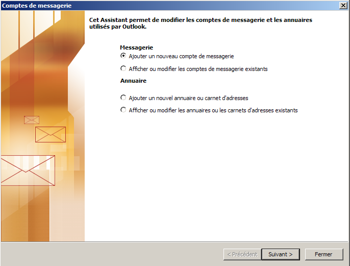
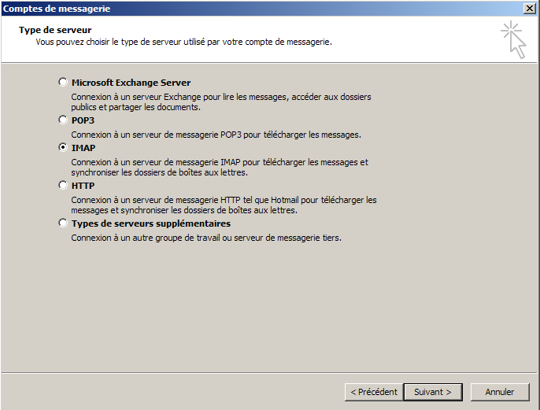
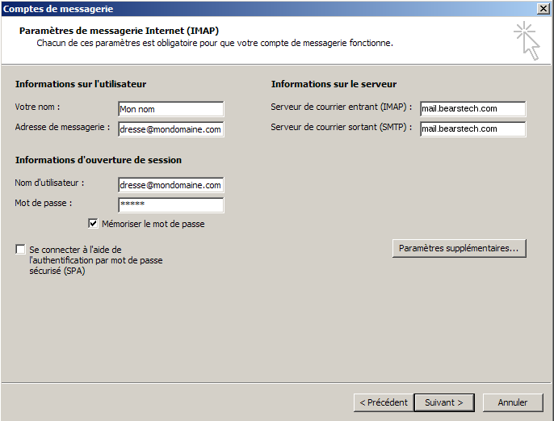
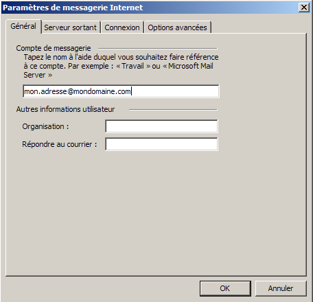
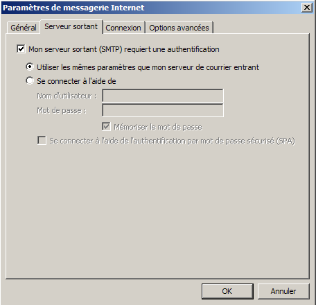
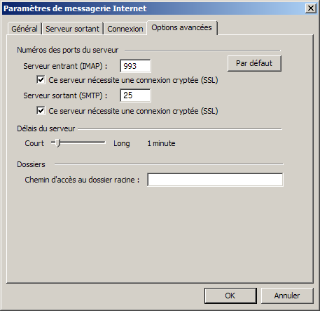
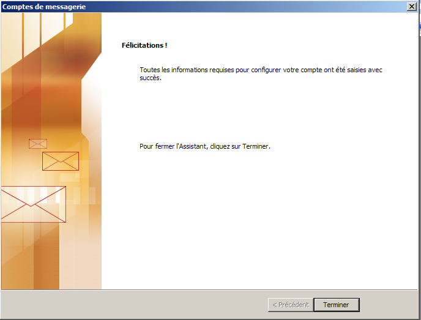

Configuration of Outlook.Informations about our mail account example:
E-Mail address: "mon.adresse@mondomaine.com" Configuration of Outlook : Launch Outlook. A new window appears:  Select "Ajouter un nouveau compte de messagerie" then "Suivant >". A new window appears:  Select "IMAP" then click "Suivant >". A new window appears:  "Votre nom :" set "Mon nom". "Adresse de messagerie :" set "mon.adresse@mondomaine.com". "Serveur de courrier entrant (IMAP) :" set "mail.bearstech.com". "Serveur de courrier sortant (SMTP) :" set "mail.bearstech.com". "Nom d'utilisateur" set "mon.adresse@mondomaine.com". Click "Paramètres supplémentaires...". A new window appears:  "Compte de messagerie" set "mon.adresse@mondomaine.com". "Adresse de messagerie" set "mon.adresse@mondomaine.com". Click "Serveur sortant". A new window appears:  Select "Mon server sortant (SMTP) requiert une autentification" and "Utiliser les mêmes paramètres que mon serveur de courrier entrant". Click "Options avancées". A new window appears:  Select both boxes "Ce serveur nécessite une connexion sécurisée (SSL)" and set "465" to "Courrier sortant (SMTP)". Outlook is now ready and will use secured connections. Click "OK" A new window appears:  Click "Terminer". |